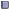

[ht::head {User Administration}]
:navtop
You can create and manage users in the Admin->Users tab.
This page shows a list of all of the users.
The icon allows you to edit a user.
The  icon allows you to view user logins and logouts.
The user name link shows the public user profile.
Under the Roles tab will list all of the known user roles and the users that are in each role.
Current sessions shows the current user sessions. The sessions are stored in the database and persist over time.
You can delete a session.
Recent user activity shows the last 100 or so user logins.
Creating New Users
From the Admin->Users tab select the "New User" button. This takes you to a page where you can create
an indivdual user account or do a bulk create.
When creating a user specify a user id, their name, whether they are an administrator, their email address and an initial password.
Note: if a user is created as an administrator then they will have full access to do anything on the RAMADDA server.
The Home Folder allows you to specify an existing folder, under which a new folder with the user's name will be created. This folder will be owned by the user (so they can upload files, etc) and is added to the user's list of favorites.
You cannot actually type in the field. Rather, press the Select link to popup a folder selector.
If you have configured RAMADDA with a SMTP mail server then you can also send mail to the new user, including instructions on how to change their password. Just select the "Send an email to the new user with message" checkbox.
In the "Bulk User Create" you can upload a comma separated list of users. Note: the above user home folder and email
settings are not applied to the bulk created user accounts.
User Roles
When creating or editing a user account you can specify any number of roles in the given text field (one per line).
The user roles mechanism is used to define access control for entries. See [ug::link access.html here] for more information.
User Registration
RAMADDA can be configured to allow arbitrary users to self-register.
To enable this add the following property to your repository.properties file
+pre addCopy=true
ramadda.register.ok=true
-pre
You can control who can self-register by specifying a pass-phrase that the user will be required to enter
+pre addCopy=true
ramadda.register.passphrase=Somephrase
-pre
Once enabled users can go to the URL: https://yourserver/repository/user/register
:p
RAMADDA can also make use of Google's Recaptcha service to authenticate that the
user is indeed a real human and not a bot.
You first need to register your site with Google at
https://www.google.com/recaptcha/admin.
Once registered get the site key (which is public) and the secret key
and add them to your repository.properties file:
+pre addCopy=true
google.recaptcha.sitekey=
google.recaptcha.secret=
-pre
[ht::foot]